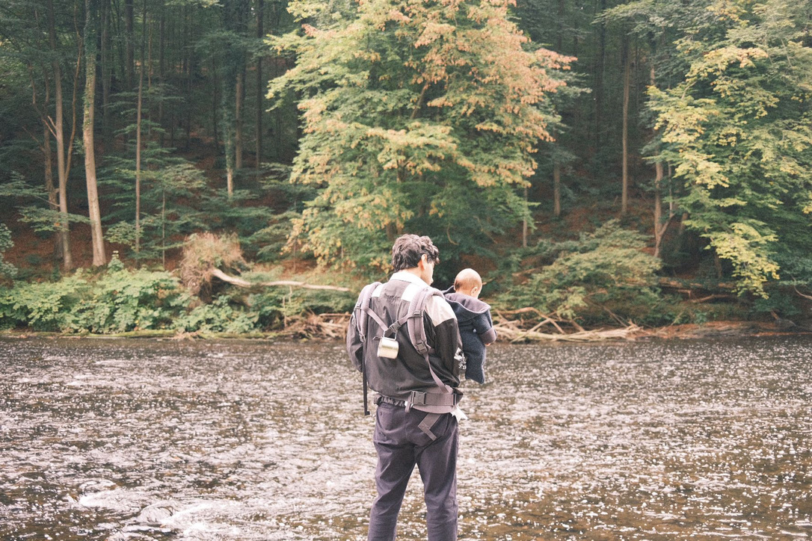
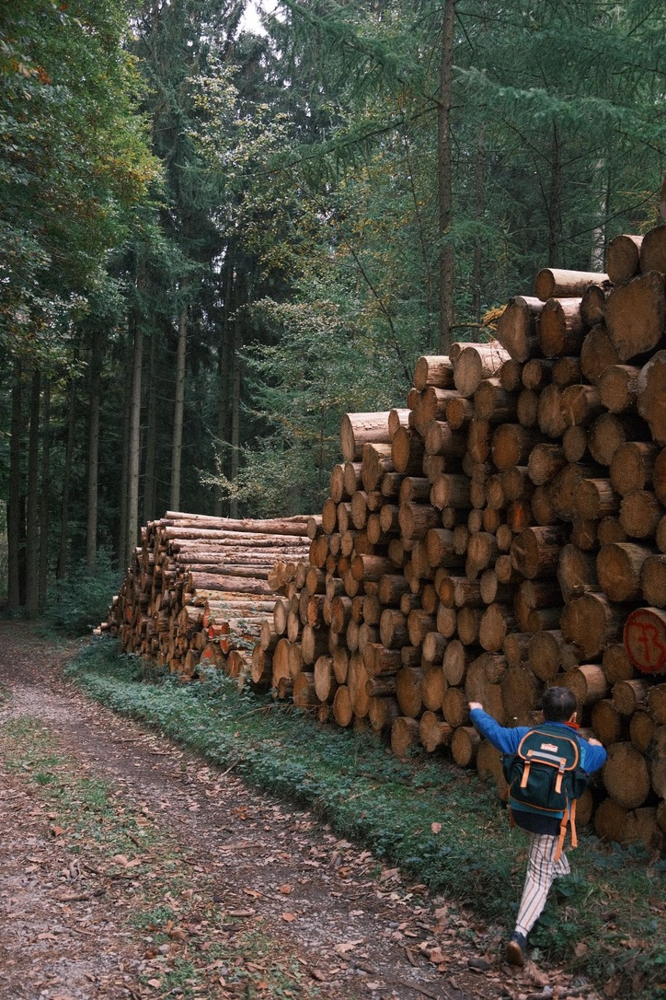
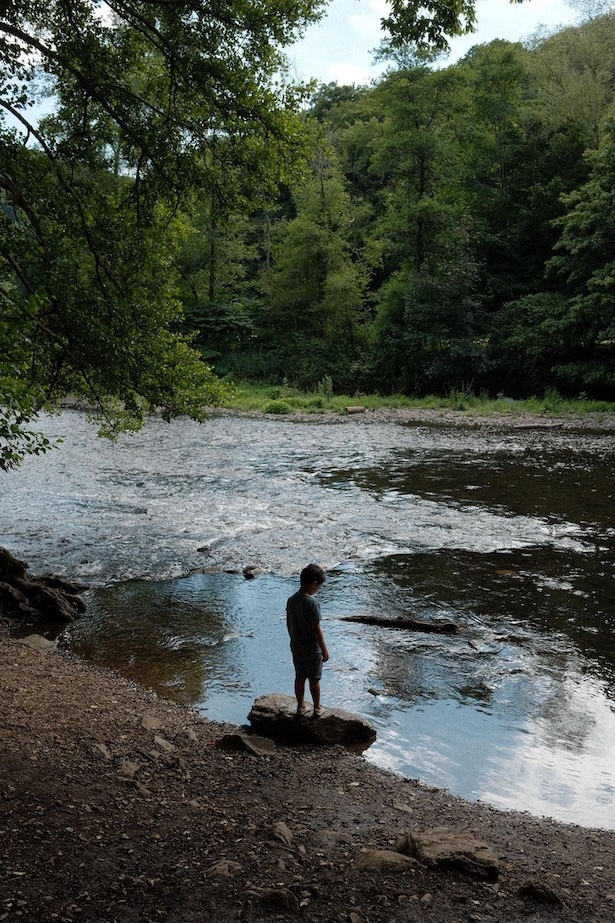

Letter from Dr. Arif Dönmez
April 12, 2026
Some motivations only become clear once life changes scale. For me, that shift came through family: forests, rivers, and ordinary walks turned environmental questions from professional topics into immediate ones.
I was trained in pure mathematics, but over time my work moved toward environmental health, developmental neurotoxicity, and the conditions under which human potential can still unfold. This letter is a short personal note on why that change happened, and why it continues to matter to me.
After becoming a father, I noticed that places I had once treated as scenery began to register differently. A river was no longer just water, and a forest no longer just background. They became concrete conditions: places in which children move, breathe, play, and grow.
That shift did not replace scientific work with sentiment. It changed the scale at which I understood it. Questions about exposure, development, and long-term harm stopped feeling distant. They became questions about what kind of world is handed over, often slowly and without notice.

“The future stops being abstract once it begins to walk beside you.”
My path into environmental health came after a doctorate in pure mathematics. What drew me across was not a rejection of abstraction, but the wish to place analytical thinking where consequences are real: in the assessment of harmful chemicals, in reproducible statistical workflows, and in methods that can support better decisions.
Developmental neurotoxicity brought that into focus. Even small shifts in cognitive development, measured across whole populations, do not remain small. They can alter educational trajectories, health burdens, social inequality, and the range of human potential a society is able to retain.

“Environmental health is not only about pollutants. It is about the conditions under which human potential can still unfold.”
This is why I care about transparent models, interpretable systems, and evidence that can withstand scrutiny. Technical work is never only technical when it enters questions of public health. It carries assumptions, consequences, and responsibilities.
The family images on this page are not decoration. They are the scale at which the issue returns to me. They remind me that future generations are not a rhetorical category. They are specific children in specific places, depending on adults to take the invisible seriously.
That is the thread connecting my work in mathematics, machine learning, toxicology, and regulatory statistics. I want analytical depth to remain intact, but I also want it pointed toward something worth protecting.